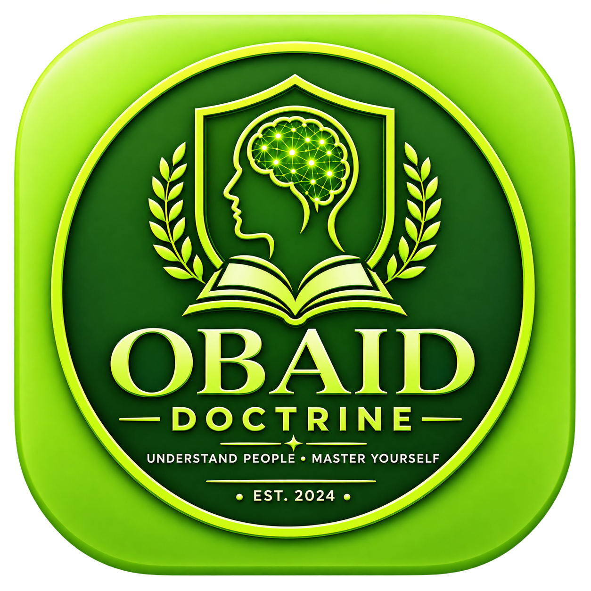

Why Do We Overthink?
The Psychology of Repetitive Thinking — a research-informed look at why thoughts can become repetitive and difficult to disengage from.
PSYCHOLOGY • HUMAN BEHAVIOUR • RELATIONSHIPS • SOCIETY
Obaid Doctrine turns complex ideas about psychology, behaviour and relationships into clear, practical, research-informed insights.

RECENTLY PUBLISHED
New research-informed reading from OBAID DOCTRINE. Publication dates are shown only where they are verified.
The Psychology of Repetitive Thinking — a research-informed look at why thoughts can become repetitive and difficult to disengage from.
Verified publication date shown above. We do not label an article “recent” using an invented or unverified date.
TODAY'S PSYCHOLOGY
20 SEP 2026 • A concise, research-informed psychology lesson for everyday life.
Cognitive reappraisal is an emotion-regulation strategy in which a person reinterprets how they understand an emotional situation. Research reviews describe it as one way people can influence emotional responses, while also noting that its usefulness depends on context.
Educational content only. This feature does not diagnose or treat a mental-health condition.
DAILY INSIGHT
20 SEP 2026 • One practical reflection, designed for everyday decisions and conversations.
When a thought feels urgent, it can be useful to pause before acting on it. A pause creates room to identify the situation, check the evidence you actually have, and choose a response rather than simply following the first impulse.
OBAID DOCTRINE DIGITAL SPACE
Tap any circle to open a knowledge area, tool or reading experience.
QUICK READ
A concise reading experience for visitors who want a clear starting point before going deeper.
When a conversation becomes emotionally charged, a short pause can create space to notice what you are feeling, clarify what you actually want to say, and respond more deliberately. A pause is not the same as avoiding the conversation—it can simply change what happens next.
START YOUR JOURNEY
Choose a path and explore OBAID DOCTRINE at your own pace.
Explore the mind, emotions, personality and everyday psychological patterns.
Explore Psychology →Learn about behaviour, communication, perception and decision-making.
Explore Behaviour →Explore communication, boundaries, conflict and family dynamics.
Explore Relationships →Use educational tests and reflection tools to think about your own patterns.
Start Exploring →TODAY'S KNOWLEDGE
Clear, practical and research-informed learning across the subjects that shape everyday life.
Discover research-informed explanations of behaviour, emotions, relationships and the choices people make.
Explore Research Insights →Context, experience and perception can shape how people respond to the same situation.
Read more →Explore communication, boundaries and relationship patterns.
Explore →LEARNING PATHS
Start small, build understanding, then go deeper.
Psychology basics → self-awareness → emotions → habits.
Begin path →Perception → communication → decisions → social behaviour.
Begin path →Communication → boundaries → conflict → family dynamics.
Begin path →PSYCHOLOGY TOOLS
Short educational tools for reflection and everyday learning.
MYTH VS FACT
A single moment can be informative, but it does not automatically explain the whole person or every situation.
Looking for context is a useful habit when learning about human behaviour.
THE OBAID DOCTRINE KNOWLEDGE UNIVERSE
Explore the complete feature directory—from psychology and human behaviour to research, education, reflection and knowledge tools.
Explore All 50 Features →OBAID DOCTRINE • ANDROID APP
The OBAID DOCTRINE Android App brings psychology, human behaviour and relationship insights into a focused mobile experience.
App کا Download Link اسی ویب سائٹ پر موجود ہے۔

OBAIDMIND TESTS
A short educational test designed to help you reflect on how you approach decisions, problems and everyday situations.
Take the Mind Test →DISCOVER • INTERACT • REFLECT
Someone replies late, writes “We need to talk,” or suddenly becomes quiet. The mind can quickly build a story around incomplete information.
Before treating your first interpretation as fact, separate what you know from what you are assuming. A different interpretation can change the emotional response.
“I should exercise more” is a wish. “If it is 7:00 pm, I will walk for 15 minutes” is a plan linked to a cue.
Use an if–then plan: “If X happens, then I will do Y.” Research shows implementation intentions can help translate intentions into action, although effects depend on the situation.
A colleague answers sharply. We may think, “That person is rude.” But what happened before that moment?
Behaviour has both personal and situational explanations. Looking for missing context can reduce the risk of turning one moment into a complete judgement of a person.
In a difficult conversation, good listening includes understanding what the other person means—not just waiting for your turn to speak.
Try three steps: don’t interrupt, summarize what you heard, then reflect the key thought or emotion. This can make your understanding clearer even when you disagree.
EXPLORE
Mind, emotions, cognition, personality and everyday psychological patterns.
Explore →Why people think, react, communicate and make decisions the way they do.
Explore →Attachment, communication, boundaries, conflict and healthy relationship patterns.
Explore →Family dynamics, social pressure, culture and modern life through a psychological lens.
Explore →RESEARCH-INFORMED INSIGHTS
A research-informed introduction to habits, reinforcement and self-awareness.
Read insight →Learn the difference between expressing a need, defending a position and listening well.
Read insight →Explore perception, prior experience and the role of context in everyday judgement.
Read insight →ABOUT THE FOUNDER
Founder & Content Creator — Obaid Doctrine
Obaid Mushtaq is the founder of Obaid Doctrine, an independent educational platform focused on psychology, human behaviour, relationships, family and society.
His work aims to make research-informed ideas about human behaviour clear, practical and accessible to a global audience.
OBAID DOCTRINE